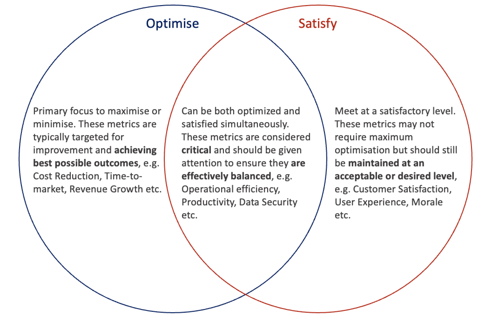

ML Model Metrics and Transformation
Navigating the Balance of Optimizing and Satisfying Metrics for Sustainable Transformation Success
In today’s fast-paced and ever-evolving business landscape, Organisations are embarking on different types of Transformation to stay ahead of the curve. As these Transformations rely heavily on data-driven decision-making, the concept of Satisfying and Optimising metrics in Machine Learning emerges as a powerful approach that is applicable to Enterprise and Digital Transformations.
In this article, we explore how this approach can be applied to identify the appropriate metrics to satisfy or optimise in the context of Transformation and some risks the Organisations must be aware.
If an Organisation aims to optimise all relevant metrics in a Transformation initiative without considering the associated risks and trade-offs, it can lead to several challenges and potential pitfalls.
Satisfying and Optimising Metrics in Machine Learning
When developing Machine Learning Models, it is common to require balancing multiple metrics. These metrics will vary depending on the specific problem, but they are generally used to evaluate the performance or effectiveness of the model (how well the model can accomplish its intended task).
Optimising metrics involves finding the best possible values for those metrics. By adjusting the ML model’s parameters, features, or architecture we try to maximise or minimise a particular metric. The specific metric will depend on the problem, as different metrics capture different aspects of model’s performance. For example, Accuracy (the percentage of correct predictions) is a commonly used metric and in some cases (e.g. classification tasks) we may look to maximise. Similarly, Mean Square Error (MSE) is a metric which we look to minimise, e.g. in regression tasks.
On the other hand, satisfying metrics refers to ensuring that certain predefined performance criteria or requirements are met. Instead of optimising a metric to its maximum or minimum value, the goal is to achieve a satisfactory level or performance on that metric, while potentially prioritising or balancing other metrics. For example, in some cases we may have a minimum Accuracy requirement (instead of maximising as mentioned previously) to minimise false positives and negatives. Similarly, in some other cases we may require low response times (e.g. in real-time decision making, like autonomous driving) and the model must provide predictions within strict time constraints to enable timely responses.
Generally, it is not possible to optimise all metrics simultaneously in Machine Learning Models. Trade-offs will arise from various factors, such as the nature of the problem, available resources, conflicting objectives etc. For example, if we assume a Machine Learning Model running on a Mobile or Edge Device we may have specific limitations in memory, processing power, energy consumption etc. Thus, optimising all metrics simultaneously may not be feasible due to these limitations. For example, optimising for maximum Accuracy may lead to excessive computational requirements, making the model unsuitable for deployment on low-resource devices.
Satisfying and Optimising Metrics in Transformation Context
One can start seeing how Optimising and Satisfying specific metrics can play a crucial role in driving Organisational growth, efficiency and success in the context of Transformation. The metrics mentioned here are focused on Transformation process and change, and help the Organisation measure its progress towards desired outcomes. If an Organisation aims to optimise all relevant metrics in a Transformation without considering the associated risks and trade-offs, it can lead to several challenges and potential pitfalls.
Conflicting Goals and Trade-offs
Different Transformation metrics often have conflicting objectives, and optimising one metric may come at the expense of another. For example, consider an Organisation aiming to optimise both Cost Reduction (minimise) and Customer Satisfaction (maximise) metrics simultaneously during a Digital Transformation initiative. While Cost Reduction may involve streamlining processes, reducing expenses throughout the value stream etc., it could lead to reduction in Customer Service quality or Product Quality, which subsequently can lead to reduction in Customer Satisfaction. If the Customer Satisfaction is the metric to optimise, satisfying a specific level of Cost Reduction may be a more appropriate approach.
Similar relationships will exist across other metrics. For example, if an Organisation looks to optimise Time-to-Market, this will lead to faster product launches, which could be competitive advantage. However, this optimisation may need to happen inside specific constraints for the other metrics. Faster Time-to-Market may require additional resources and investments impacting the Cost Reduction metric. Similarly, the rapid launches may impact product quality and potentially affect Customer Satisfaction.

The Transformation Leaders in an organisation must be aware of the potential side effects of focusing solely on optimising metrics without considering the broader impact, and must also ensure that the optimisation efforts are aligned with organisation’s overall objectives.
Aligning the Optimising and Satisfying approach across Machine Learning and Transformation
While there are similarities in the approach of Optimising and Satisfying metrics between Machine Learning Models and Transformation, there are also key differences. In Machine Learning Models we focus on improving predictive performance and accuracy by fine-tuning parameters, while in Transformation efforts in Organisations, we focus on goals related to growth, efficiency, success etc.
| Aspect | Machine Learning Model | Transformation Initiatives |
|---|---|---|
| Purpose | Predictive Modelling, Pattern Recognition, Decision-Making etc. | Organisation Growth, Efficiency, Success etc. |
| Optimisation Approach | Adjusting Model Parameters to maximise desired metrics. | Focusing on specific metrics for improvement and optimisation. |
| Metrics | Accuracy, Precision, Recall, F1 Score etc. | Cost Reduction, Customer Satisfaction, Time-to-Market etc. |
| Trade-Offs | Optimising one metric may negatively impact others. | Conflicting goals between metrics, resource constraints etc. |
| Constraints | Model complexity, imbalanced data, resource limitations etc. | Conflicting objectives, domain-specific requirements etc. |
| Risks | Overfitting, biased models, limited generalization etc. | Unintended consequences, neglecting long-term sustainability etc. |
| Impact on Decision-Making | Informs model selection and parameter tuning. | Guides Transformation strategies and prioritizes actions. |
| Contextual Considerations | Data characteristics, problem and task requirements etc. | Organisation goals, industry dynamics, organisational culture etc. |
In both cases, there are trade-offs to consider, such as the impact on optimising one metric on others, and the constraints imposed by complexity, resource limitations etc. Additional, risks exist in both cases which must be considered.
Wrapping up - The Role of the Transformation Leader
By understanding the importance of optimising specific metrics while satisfying others and being prepared to make trade-offs and actively guiding the process, the Transformation Leaders play an important role in ensuring the success of Transformation initiatives and driving a sustainable Organisational change.
The Transformation Leaders must foster a culture of Continuous Improvement by regularly evaluating the effectiveness of Metric Optimisation Strategies and identifying opportunities for refinement and make adjustment as necessary to minimise negative consequences.